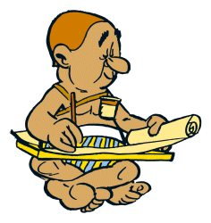

Il était une fois une petite souris.
Elle voulait apprendre à coder.
Seulement voilà, après avoir demandé à toutes ses connaissances,
elle dût se résigner à faire appel à son plus vieil ennemi, le chat.
D'après la rumeur, lui seul savait et, après avoir durement étudié, était devenu un maître dans cette nébuleuse (mais clairement fascinante) discipline.
Quand elle vint le voir, lui quémandant son aide, il la prévint :
Faim tu ignoreras, Soif tu n'auras, Sommeil tu fuieras, Amis et Famille tu oublieras, Neurones tu satureras,
et enfin Frustations (Joies aussi mais chhhuut, il ne faut pas le dire, pas maintenant) tu connaîtras.
Pourquoi lui demanda-t-elle, effrayée par cet horrible énoncé.
La connaissance et la puissance qu'elle procure sont à ce prix lui répondit-il, émergeant d'un rêve éveillé.
Acceptez-tu ces conditions ? Tu as le choix entre :
Alors ??
La souris, à l'esprit vif et surtout extrêment motivée (en plus d'être coincée par ce choix), accepta de devenir l'élève de Maître Blue Cat.
Ainsi débuta ce passionnant enseignement...
Note d'information > J'ai attribué des niveaux d'ATTENTION :
ATT-NIV 1 = Attention appuyée demandée.
ATT-NIV 2 = Attention plus soutenue voulue.
ATT-NIV 3 = Attention MAXIMALE exigée.
ATT-NIV 1
D'abord, tu dois bien comprendre qu'il existe des langages spéciaux à connaître si tu veux fabriquer,
depuis ton ordinateur, une page Web (un site Web est - généralement - constitué de plusieurs pages Web).
Deux de ces langages sont obligatoires pour cela :
Exemple ici : Google.com
Après un clic-gauche sur le lien bleu, fais un clic-droit n'importe où sur la page
(SAUF sur la barre d'adresses tout en haut, sur la barre des favoris et sur celle du moteur de recherche qui est au milieu de la page)
puis un clic-gauche, dans le menu affiché alors, sur "Afficher le code source".
Pour résumer ces deux langues :
La première représente - pour illustrer plus facilement - l'architecte d'une maison pour toutes ses parties (toit, murs, sol, plafond, les pièces).
La seconde, elle, et toujours avec l'exemple de la maison, a le rôle de décorateur d'intérieur et d'extérieur (aménagement des pièces, tailles et volumes, ameublement, couleurs...).
Nous devons commencer par l'HTML, comme tu l'auras deviné.
Pour pouvoir se lancer avec ce langage, il faut les outils nécessaires.
ATT-NIV 2

On passe vite fait sur Les Informations : Ce sont toutes les données qui vont être renseignées entre chaque balise et qui seront affichées sur la page Web (textes, images, vidéos, liens...), tout est dit, point.
Autre point rapide MAIS Important : Code HTML + Code CSS = Code Source,
La Superbe Villa de l'ami Mark, avec la maison comme exemple, ou bien le très rare livre ancien - relié de cuir et au titre doré à l'or fin - que le cousin Jack garde jalousement dans sa collection privée, comme autre exemple.
Vous verrez et écrirez des mots anglais. Pas de panique pour les fâchés avec l'anglais (dont je fais parti).
En réalité, ce sont de petits mots (souvent même des abréviations) en anglais qui constituent 99% d'une balise.
Et puis, à force d'écrire des balises, franchement on les retient assez vite.
Maintenant, parlons du Parchemin/de la Tablette de Cire/du Tableau noir.
Bref, les supports utilisés pour rédiger les balises et les informations.
Il y a deux catégories de supports-logiciels :
Ce sont tous les logiciels qui permettent de créer des pages Web,
sans avoir besoin d'apprendre un langage de ce type, générant automatiquement les codes HTML et CSS.
Oui, ce serait bien plus simple et rapide à manier.
MAIS ces lignes de codes ainsi obtenues sont de mauvaises qualité.
S'il - et c'est même certain - faut retravailler ces lignes plusieurs fois ou au moins qu'elles soient claires à lire, il n'est alors pas conseillé d'user de ces moyens.
Exemples de ces logiciels : Mozilla Composer, Microsoft Expressions Web, Dreamweaver, Microsoft Word (et oui lui aussi peut le faire).
Donc, NON RECOMMANDES.
Ce sont des programmes/logiciels faits pour écrire du code.
Employés pour plusieurs langages, en plus de l'HTML et du CSS.
Ils représentent de sérieux et puissants alliés pour les créateurs de sites Web.
Exemples : Bloc-notes (intégré à l'ordinateur), Sublime Texte, Notepad++, Brackets, jEdit, PSpad...
Note : Comme tout programme/logiciel informatique, il faut correctement choisir la version adaptée à votre système d'exploitation (= OS).
Les fameuses"Balises"

{kind=link}
{kind=link}